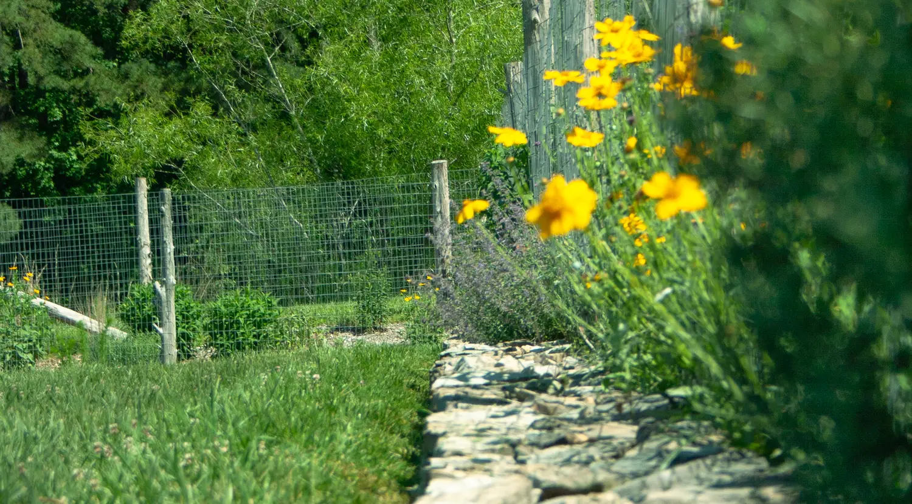
Ecological Landscape Design and Consultation · Carrboro, NC
Gardens that feel at home in the Piedmont.
Piedmont Environmental helps homeowners plan landscapes that look natural, welcome birds and pollinators, and are a pleasure to live with — not a chore to maintain.
About
Meet Matthew Arnsberger
After more than five decades working with the land, Matthew is now semi-retired — and focusing on the part of the work he loves most: helping homeowners design landscapes that fit their lives and their local ecology. He studied soils and horticulture at the University of Maryland, spent years farming and teaching permaculture, and earned a master's degree in Ecological Landscape Design from the Conway School in Massachusetts.
He founded Piedmont Environmental in 1998 and was a principal designer at the much-loved Niche Gardens in Chapel Hill. Today he works one-on-one, personally taking on a select number of design and consultation projects. When a plan calls for installation, he'll point you to the trusted, licensed contractors — arborists, irrigation specialists, and builders — he's worked alongside for years.
What I Offer Today
Consultation & Design
Good landscapes borrow from how nature actually works. Healthy, diverse plantings support one another, ask for less fuss, and quietly do more — for you, and for the birds, bees, and butterflies that share your yard.
What a good design focuses on
- Plant communities that truly belong in the North Carolina Piedmont
- More diversity, which naturally means fewer pest and disease problems
- Letting plants reach their natural size gracefully — no endless pruning battles
- Building healthy, living soil with rich organic matter and the right pH
- Inviting birds, butterflies, and pollinators back into your yard
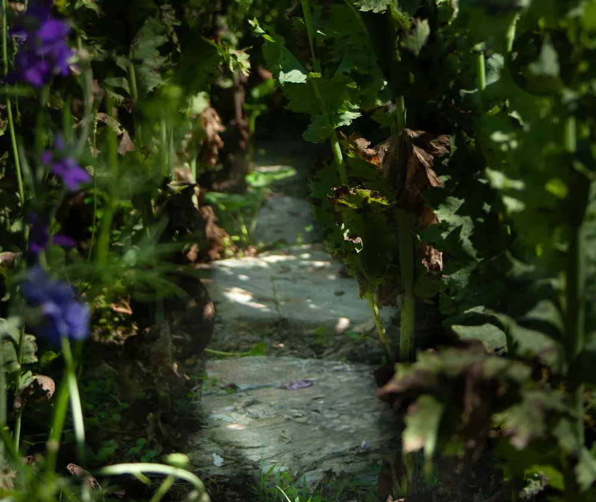
What a design can include
Foundation plantings, mixed border beds, woodland shade gardens, rock gardens, rain gardens, and Piedmont meadows — whatever suits your site and how you live. And because it's planned to work with nature rather than against it, a thoughtful landscape usually needs less upkeep, not more.
Whether you want a full plan to grow into over several seasons or focused advice on one tricky corner, we'll shape it around your priorities.
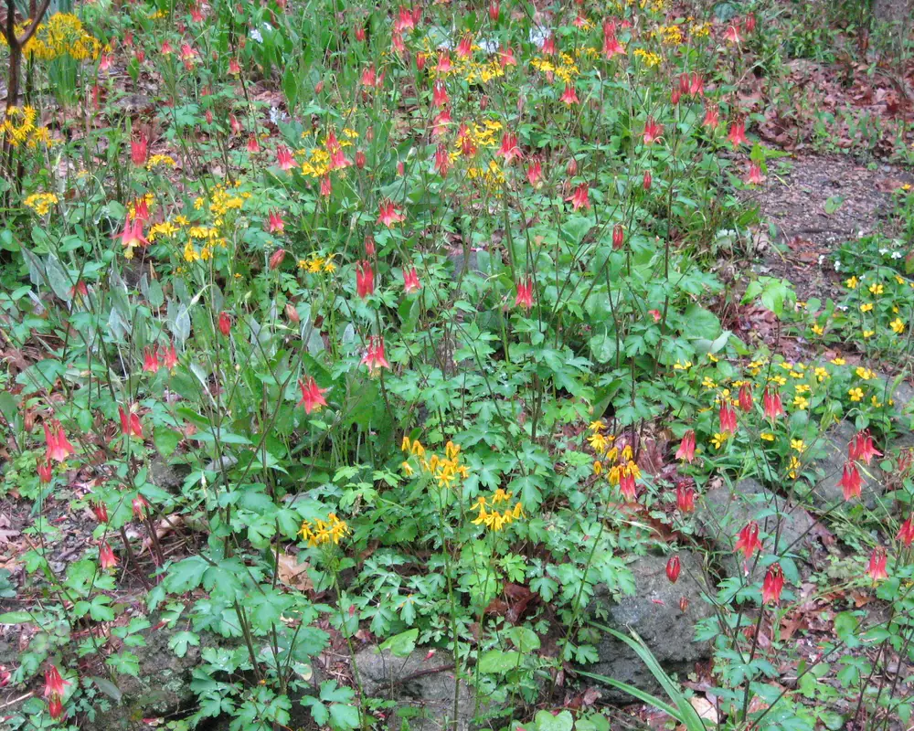
The Process
What to expect from a consultation
- We walk your property together — usually about 90 minutes.
- We look at soil, slope, sunlight, views, and how you actually use the space.
- We talk through your existing plants — what to keep, move, or replace.
- You come away with clear, practical guidance for restoring, repairing, or reimagining your landscape.
Selected Work
A look at the gardens
A few landscapes and designs from over the years. Click any image to take a closer look.
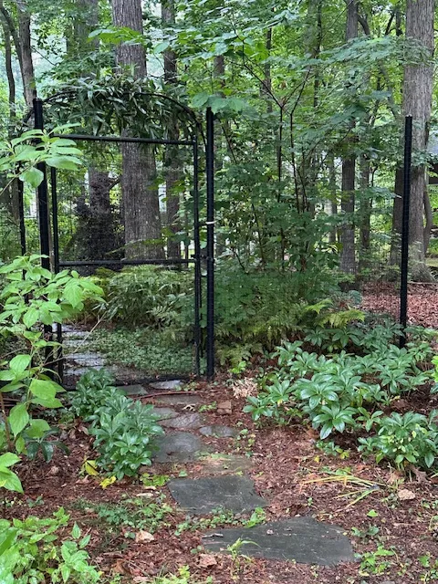
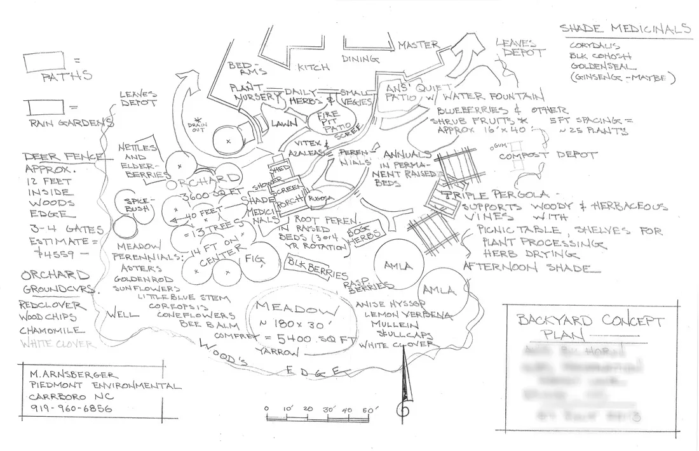
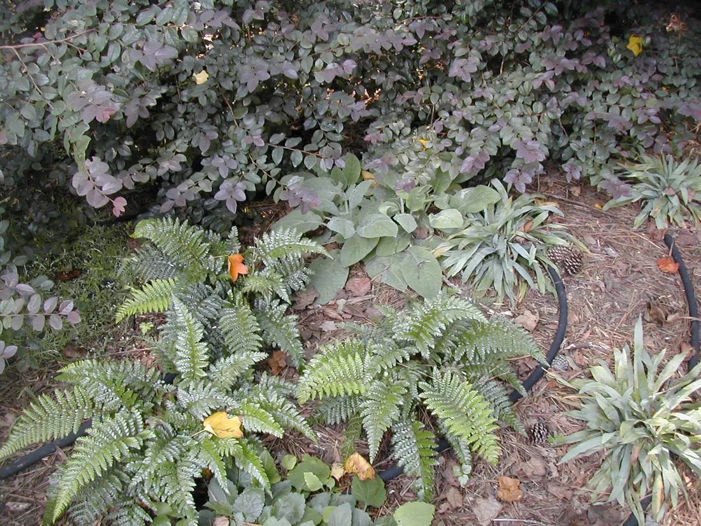
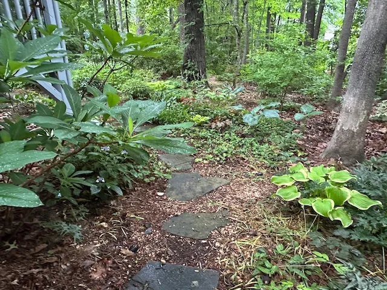
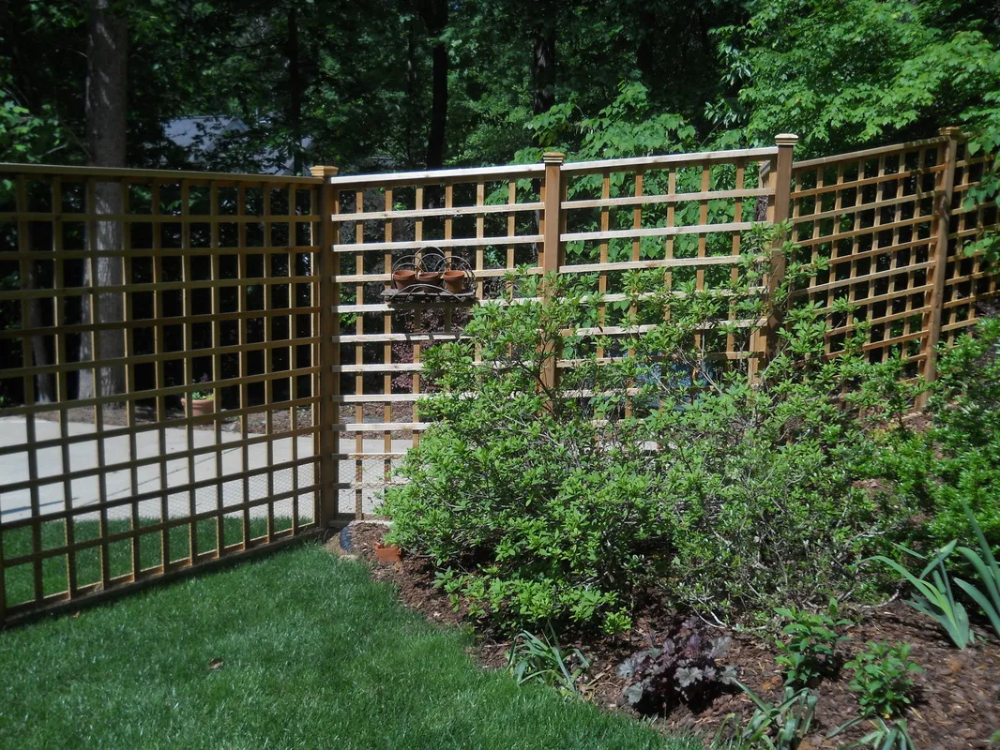
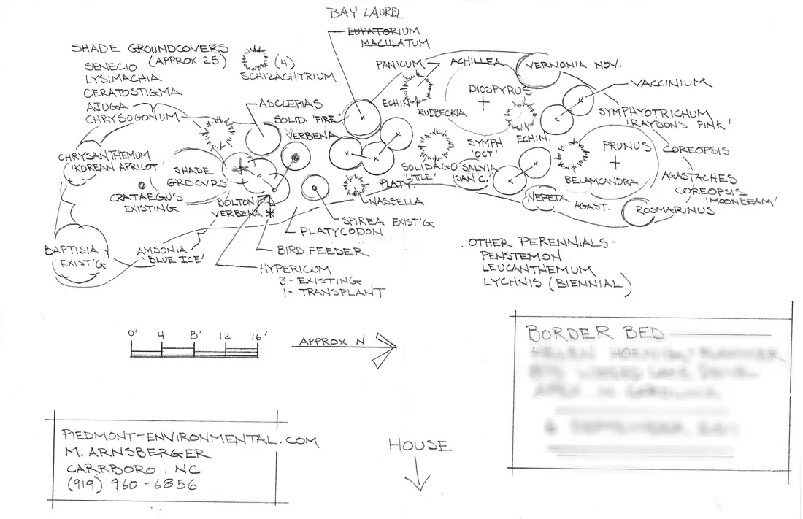
Past Experience
Decades of hands-on work
Before stepping back from full-scale installation, Matthew spent years building landscapes across the region. That hands-on experience is exactly what makes his design and consultation advice so practical. Here's a look at the work he used to take on.
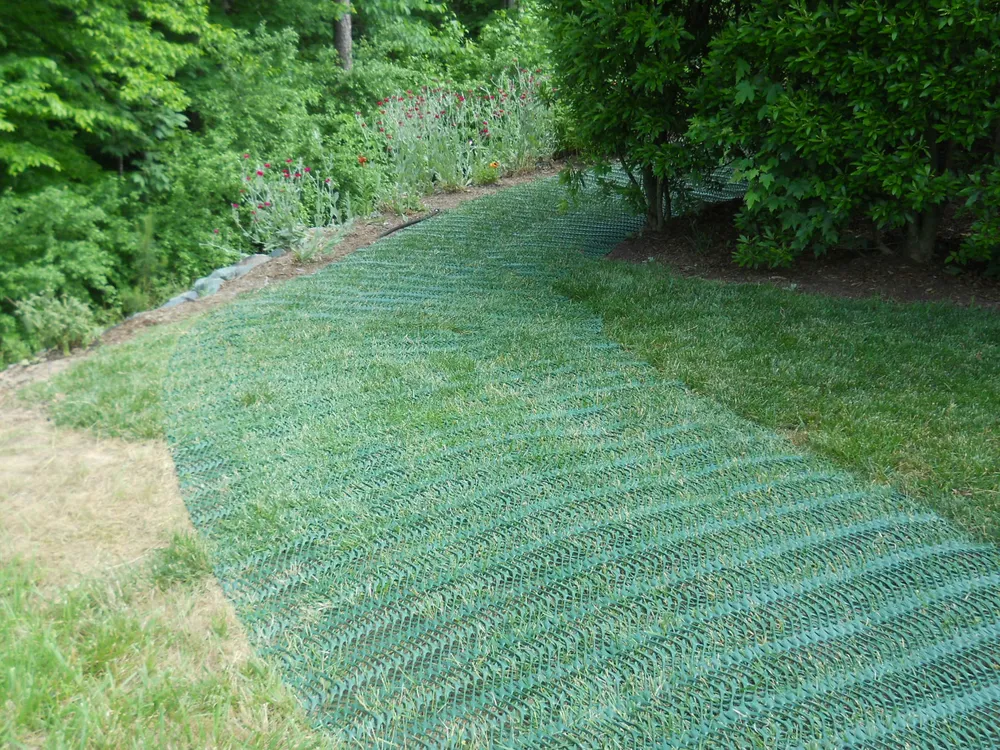
Landscape Installations
Building beds, paths, and plantings from the ground up — soil, structure, and all.
See the work →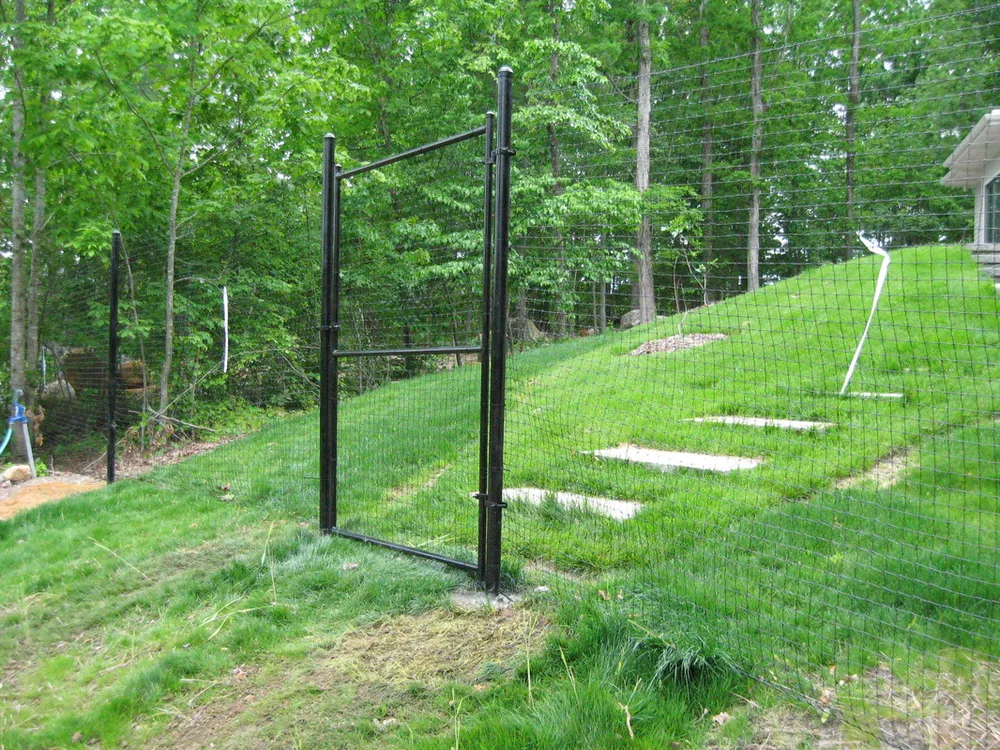
Deer Fences
Practical, good-looking fencing that let homeowners grow what deer kept eating.
See the work →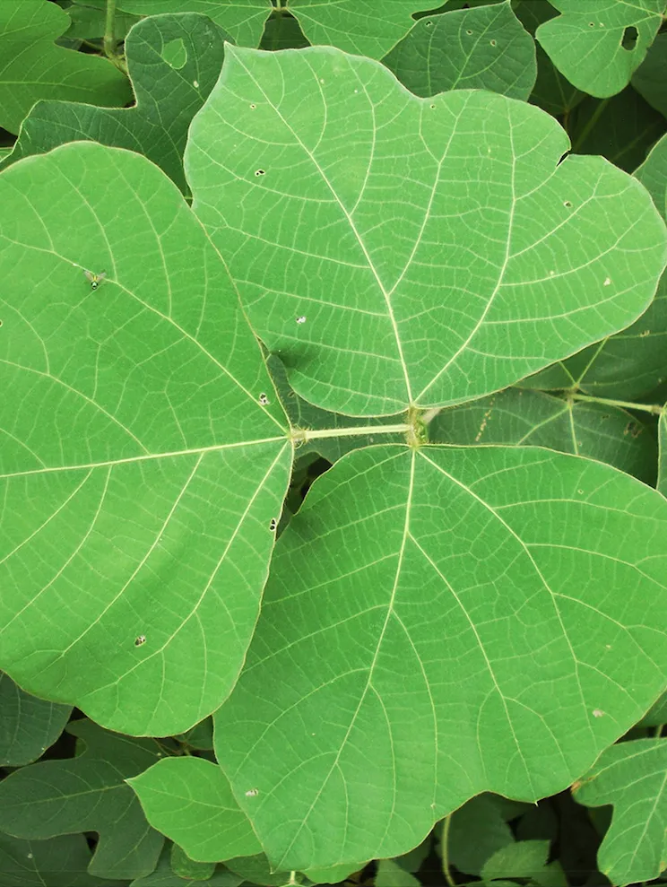
Invasive Plant Control
Clearing aggressive, non-native plants so native landscapes could recover.
See the work →From the Field
Articles & notes
Over the years Matthew has written for fellow gardeners on the practical side of growing things in the Piedmont. A few favorites:
Watering New Plantings
How much, how often, and the simple finger test that keeps new shrubs and trees alive through their first season.
Read article →Coyotes in Our Neighborhoods
What coyotes actually eat, why they're here, and the simple, humane steps that keep pets safe and coyotes wary.
Read article →How to Eat a Persimmon and Love It
One of the easiest edible trees for the Piedmont — and the trick to enjoying persimmons instead of puckering at them.
Read article →Kind Words
What homeowners say
The most knowledgeable landscaping professional I have ever worked with. He genuinely understands soils, plants, and climate — both the art and the science. His proposal for my clients was the most detailed and well-thought-out I've seen in over 20 years in the profession. Very highly recommended!— Arielle S., Architect
We searched for a landscape pro focused on native plantings and building an ecosystem around them, and found Matthew. The beauty and functioning ecosystem we've already achieved is spectacular — many more birds, butterflies, bees, and little critters to share our space with. His process takes your unique space and practical needs into account, which makes it fun to take on.— Mel F., Homeowner
Piedmont takes consulting to a whole new level. They explained things in a way both a professional and a homeowner could understand, and their suggestions were practical and workable. The plants, designs, and improvements they recommended haven't just worked — they've made my landscape thrive. I'll be a returning customer!— Paul C., Homeowner
Matthew consistently does quality work. His landscapes look beautiful and last, thanks to his use of native plants and healthy soil. He is the best gardener we have ever had.— Cheri M., Homeowner
Picture-perfect work, and a pleasure to work with — friendly, insightful, and genuinely good at what they do.— Michelle S., Homeowner
Best landscaper in North Carolina — knowledgeable and truly environmentally minded.— Gray B., Homeowner
Get in Touch
Let's talk about your landscape
Reach Matthew directly
I'd be glad to hear about your site, your goals, and what you'd like your yard to become. Email is the best way to reach me, and I'll get back to you personally.
matthew@piedmont-environmental.com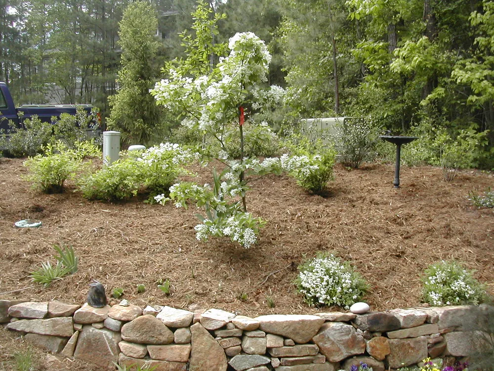